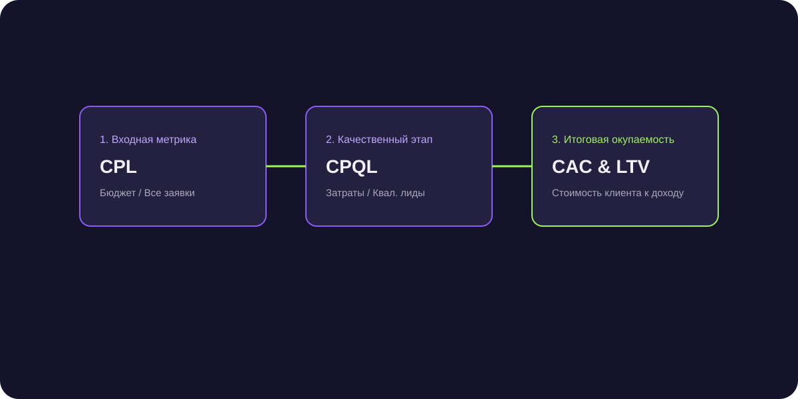

Как увеличить средний чек в B2B сделках: 6 проверенных стратегий без потери конверсии
Привлечение каждого B2B-клиента стоит дорого. Рост среднего чека всего на 20% может удвоить чистую прибыль компании без увеличения затрат на маркетинг. Разбираем механику допродаж.

Короткий ответ
Увеличение среднего чека в B2B достигается за счет перехода от продажи разового товара или услуги к комплексному решению задач заказчика. Основные механики: пакетные предложения (Bundling) с выгодной ценой на комплект, продажа годовых сервисных контрактов, предложение увеличенной партии с прогрессивной скидкой за объем и внедрение премиальных тарифов с приоритетной поддержкой.
6 стратегий повышения суммы сделки в корпоративных продажах
- Пакетные решения (Product Bundling): продажа оборудования сразу с монтажом, пусконаладкой и годовым запасом расходных материалов.
- Upsell до старшей модели: демонстрация разницы в производительности: «Модель Б стоит на 18% дороже, но окупается на 4 месяца быстрее за счет энергоэффективности».
- Продажа SLA и расширенной гарантии: предложение VIP-сервиса с выездом инженера в течение 2 часов вместо стандартных 24 часов.
- Мотивация объема (Volume Discount): предложение докупить объем до следующего оптового порога, чтобы снизить себестоимость единицы.
- Cross-sell сопутствующих услуг: страхование груза, юридическое сопровождение или обучение персонала заказчика.
- Калибровка цен по ценности (Value-Based Pricing): обоснование цены через будущую финансовую выгоду клиента, а не через затраты.
Психология ценового якорения: правило трех тарифов
Всегда предлагайте клиенту три варианта коммерческого предложения: «Базовый», «Оптимальный» (наш целевой продукт) и «Премиум» (сверхдорогой тариф со всеми опциями). На фоне дорогого премиума оптимальный вариант воспринимается как наиболее разумная и выгодная сделка.
Как мотивировать менеджеров продавать дороже
Внедрите повышенный коэффициент бонуса за продажи комплексных пакетов или сделок с чеком выше медианного по отделу.
Частые вопросы по теме
Не приведет ли попытка апсейла к срыву сделки?
Нет, если предлагать допродажи вовремя — после того, как клиент принципиально согласился на покупку основного продукта, и делать акцент на выгоде и безопасности.
Как аргументировать покупку более дорогого тарифа консервативному клиенту?
Покажите расчет совокупной стоимости владения (TCO): дешевый аналог требует более частого ремонта и в итоге обходится дороже.
Рост среднего чека с 840 000 ₽ до 1 290 000 ₽
Включение в стандартное КП обязательного пункта «годовое техническое обслуживание с гарантией бесперебойности» увеличило чек на 53%.